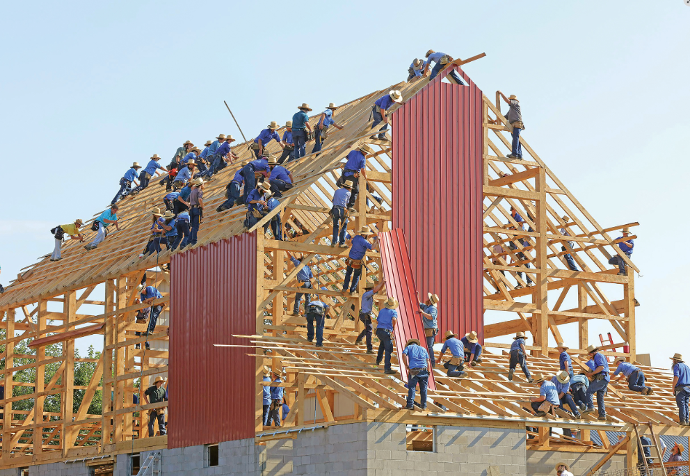

Click a slide to jump to it. Click Copy to copy its reference code (e.g. to tell Claude “reuse slide U2.1/essential-questions”).

IT TAKES A VILLAGE
IMPACT 4 · UNIT 2.1
8TH GRADE ESL
70 MINUTES
Rochester · Chía
Silent Starter 7 min
🔇 Voices off
✏️ Pencils sharp
📝 2–3 sentences
What is one problem in your community that you would like to change?Who does it affect?
(Teacher will take Attendance)
Circle Time 7 min
1 Define it
What does the word community mean?
2 Connect to you
Think of a time someone in your community helped you — or you helped someone. How did it feel?
3 Think about it
Imagine a town where nobody helps each other. What problems would happen? How could you fix them?
Lesson · Part A 21 min
✏️ Copy into your notebook
Factual:What is a systemic thinking solution?
Conceptual:How can a systemic thinking solution be created? (What aspects need to be taken into consideration)
Debatable:Should we help people we don’t know?
Unit 2 · It Takes a Village Part A
👥 Discuss with your base groups
Amish barn raising in Ohio, US
“By working together, we can make communities more visible.”— Ana Luísa Teixeira
Look at the photo. Why do you think there are so many people working together?
Read the quote. Why do you think visibility is important to a community?
Think about the title, the quote, and the photo. What do you think “It Takes a Village” means in this context?
When people are in need in your community, how can you help? Think of different problems that affect your community and ways you can take part in the solution.
Active Pause 7 min
Get up and move!
🏗️A
Barn-Raising Relay
Teams of 5 pass "bricks" (paper balls) down a line to build a tower. Say a new word every pass!
🧭B
Four Corners
Listen to a statement. Walk to: Strongly agree · Agree · Disagree · Strongly disagree.
🧘C
Stretch & Breathe
5 stretches + 10 slow breaths. Calm and quiet.
Lesson · Part B 21 min
✏️ Record the vocabulary in your notebook
1
addressA lack of clean drinking water is a problem that we need to address immediately.
2
amountWorkers gathered large amounts of food and water to help after the earthquake.
3
complexWe are facing many complex environmental problems and we need creative solutions.
4
crisisDuring a crisis, it’s important to stay calm and find help.
5
crowdsourcingCrowdsourcing happens when a lot of people share information on a topic or event.
6
dataCollecting and analyzing data is important for finding ways to help different communities in need.
7
documentYou can document what you see by writing it down or making a voice recording.
8
expandTechnology expands our ability to respond to problems that happen far away.
9
humanitarianHumanitarians want to help people in need.
10
locateRescuers used GPS information to locate the people needing help.
11
measureIt can be difficult to measure the level of destruction of a large earthquake.
12
monitorRescuers can use technology to monitor conditions after a disaster.
13
resourcesIn the mountains, people don’t always have easy access to resources such as food or Internet services.
14
scaleThe scale of the hurricane’s impact was very large: people throughout the region were affected.
15
uploadWhen you upload a photo to a social media site, your friends can see it.
Processing Activity 7 min
How did it go?
W · What did I want? What was my goal today?
D · What did I do? What did I choose to do, think and feel?
E · Did it help? Did my choices help me, my group and my learning?
P · What's my plan? One thing I'll keep. One thing I'll change.